| Kickoff says | What we did | Where |
|---|---|---|
| Fit and tune using the training set only | Every number on this page is repeated 5-fold x3 CV on TRAIN; the test set is not read | 5.1-5.4 |
| Show untuned and tuned results | Each ML method has an untuned and a tuned (small GridSearchCV) row; table 5.2 shows untuned → tuned | 5.2 |
| Keep grids small / coarse on small arms | Grids of 5-12 combinations, inner 3-fold | 5.2 |
| Stepwise lists selected terms; LASSO and elastic net list non-zero coefficients | Retained terms of each selector (full-train fit) | 5.3 |
| Per-method 'watch out' | One line per method taken from the kickoff method slides | 5.1, 5.2 |
Metric: repeated 5-fold x3 CV on TRAIN (mean ± SD over the 3 repeats; the SD is small because the folds repeat the same patients, it is not a confidence interval). Bold = best covariate model of that arm.
Continuous outcome: CV RMSE (original units; lower is better)
| Method | Settings | Mexiletine | Oligonucleotide | Tideglusib | Watch out (kickoff) |
|---|---|---|---|---|---|
| lm / glm (all) | lm (continuous) / binomial glm (label), all columns | 0.842 ± 0.021 | 1.692 ± 0.052 | 2.642 ± 0.086 | Assumes linear effects; sensitive to outliers; will not capture non-linear effects. |
| Stepwise (BIC) | MASS::stepAIC, direction both, penalty log(n) | 0.811 ± 0.003 | 1.531 ± 0.030 | 2.446 ± 0.019 | Unstable: a slightly different dataset can select a very different set; do not treat the final model as the truth. |
| Best subset (BIC) | leaps::regsubsets, exhaustive, nvmax 10, lowest BIC (continuous only) | 0.802 ± 0.006 | 1.531 ± 0.030 | 2.458 ± 0.035 | Costly beyond about 20-25 covariates; choose by BIC, not R2. |
| Ridge | glmnet alpha=0, lambda by 10-fold CV | 0.832 ± 0.019 | 1.517 ± 0.008 | 2.567 ± 0.030 | Needs CV for lambda; keeps every covariate (shrunk, never zero). |
| LASSO | glmnet alpha=1, lambda.min by 10-fold CV | 0.795 ± 0.003 | 1.515 ± 0.011 | 2.486 ± 0.056 | Can arbitrarily drop one of two highly correlated covariates; important variables may vanish. |
| Elastic net | glmnet alpha=0.5, lambda.min by 10-fold CV | 0.799 ± 0.007 | 1.511 ± 0.008 | 2.515 ± 0.045 | Needs CV for lambda; mixes the ridge and LASSO behaviour. |
| GAM | mgcv: s(x, k=5) per numeric covariate, dummies linear, REML, select=TRUE | 0.815 ± 0.019 | 1.669 ± 0.045 | 2.422 ± 0.056 | Harder to interpret; k too small misses patterns, too large overfits. |
| PCR | prcomp on the design, number of components (max 12) by 5-fold CV | 0.885 ± 0.034 | 1.511 ± 0.025 | 2.672 ± 0.050 | Components are hard to interpret clinically; PCA is unsupervised. |
| Mean only | - | 1.357 ± 0.003 | 1.599 ± 0.002 | 3.006 ± 0.014 | Reference: predicts the training mean for everyone. |
Responder label: CV ROC-AUC (higher is better)
| Method | Settings | Mexiletine | Oligonucleotide | Tideglusib | Watch out (kickoff) |
|---|---|---|---|---|---|
| lm / glm (all) | lm (continuous) / binomial glm (label), all columns | 0.621 ± 0.027 | 0.632 ± 0.021 | 0.708 ± 0.041 | Assumes linear effects; sensitive to outliers; will not capture non-linear effects. |
| Stepwise (BIC) | MASS::stepAIC, direction both, penalty log(n) | 0.647 ± 0.033 | 0.692 ± 0.043 | 0.759 ± 0.026 | Unstable: a slightly different dataset can select a very different set; do not treat the final model as the truth. |
| Ridge | glmnet alpha=0, lambda by 10-fold CV | 0.664 ± 0.040 | 0.688 ± 0.014 | 0.730 ± 0.017 | Needs CV for lambda; keeps every covariate (shrunk, never zero). |
| LASSO | glmnet alpha=1, lambda.min by 10-fold CV | 0.656 ± 0.021 | 0.679 ± 0.025 | 0.773 ± 0.003 | Can arbitrarily drop one of two highly correlated covariates; important variables may vanish. |
| Elastic net | glmnet alpha=0.5, lambda.min by 10-fold CV | 0.666 ± 0.030 | 0.679 ± 0.015 | 0.768 ± 0.009 | Needs CV for lambda; mixes the ridge and LASSO behaviour. |
| GAM | mgcv: s(x, k=5) per numeric covariate, dummies linear, REML, select=TRUE | 0.625 ± 0.029 | 0.680 ± 0.047 | 0.728 ± 0.033 | Harder to interpret; k too small misses patterns, too large overfits. |
| PCR | prcomp on the design, number of components (max 12) by 5-fold CV | 0.695 ± 0.024 | 0.675 ± 0.019 | 0.704 ± 0.019 | Components are hard to interpret clinically; PCA is unsupervised. |
| Prevalence only | - | 0.480 ± 0.000 | 0.493 ± 0.000 | 0.500 ± 0.000 | Reference: predicts the training responder share (AUC 0.5). |
Each cell shows CV untuned → tuned. Tuning is an inner 3-fold grid search inside each outer fold. Support-vector and MLP regressors standardise the target internally and predict in original units.
Continuous outcome: CV RMSE (lower is better)
| Method | Untuned | Tuned grid (inner 3-fold) | Mexiletine | Oligonucleotide | Tideglusib | Watch out (kickoff) |
|---|---|---|---|---|---|---|
| Decision tree | max_depth 3 | max_depth {2,3,5,None} x min_samples_leaf {1,5,10} | 0.986 → 0.963 | 1.798 → 1.612 | 2.234 → 2.255 | A deep tree memorises noise; limit the depth. |
| Random forest | 300 trees | same grid as tree | 0.860 → 0.842 | 1.559 → 1.495 | 2.222 → 2.201 | Harder to read; the vote hides the individual rules. |
| SVM (RBF) | RBF kernel, defaults | C {0.1,1,10} x gamma {scale,0.01,0.1} | 0.874 → 0.853 | 1.588 → 1.559 | 2.453 → 2.459 | Hard to explain to clinicians. |
| KNN | k = 7 | k {3,5,7,11,15,21} x weights {uniform,distance} | 0.954 → 0.946 | 1.564 → 1.554 | 2.607 → 2.588 | Noise covariates dilute similarity and can mislead the neighbours. |
| XGBoost | 200 trees, depth 3 | depth {2,3,4} x trees {100,300} x lr {0.03,0.1}, subsample 0.8 | 0.940 → 0.839 | 1.805 → 1.580 | 2.382 → 2.160 | Many settings; with few patients it overfits quickly. |
| MLP (16,) | one hidden layer of 16 | hidden {8,16,32} x alpha {1e-4,1e-2,1} | 0.885 → 0.843 | 1.952 → 1.741 | 3.000 → 2.585 | Least transparent; small arms limit what it can learn. |
Responder label: CV ROC-AUC (higher is better)
| Method | Untuned | Tuned grid (inner 3-fold) | Mexiletine | Oligonucleotide | Tideglusib | Watch out (kickoff) |
|---|---|---|---|---|---|---|
| Logistic regression | max_iter 2000 | C in {0.01, 0.1, 1, 10, 100} | 0.627 → 0.682 | 0.646 → 0.700 | 0.719 → 0.716 | Assumes straight-line effects; can miss interactions. |
| Decision tree | max_depth 3 | max_depth {2,3,5,None} x min_samples_leaf {1,5,10} | 0.628 → 0.600 | 0.562 → 0.554 | 0.721 → 0.761 | A deep tree memorises noise; limit the depth. |
| Random forest | 300 trees | same grid as tree | 0.637 → 0.674 | 0.603 → 0.649 | 0.799 → 0.803 | Harder to read; the vote hides the individual rules. |
| SVM (RBF) | RBF kernel, defaults | C {0.1,1,10} x gamma {scale,0.01,0.1} | 0.574 → 0.565 | 0.606 → 0.630 | 0.767 → 0.682 | Hard to explain to clinicians. |
| KNN | k = 7 | k {3,5,7,11,15,21} x weights {uniform,distance} | 0.582 → 0.636 | 0.628 → 0.628 | 0.712 → 0.765 | Noise covariates dilute similarity and can mislead the neighbours. |
| XGBoost | 200 trees, depth 3 | depth {2,3,4} x trees {100,300} x lr {0.03,0.1}, subsample 0.8 | 0.550 → 0.611 | 0.581 → 0.606 | 0.783 → 0.778 | Many settings; with few patients it overfits quickly. |
| MLP (16,) | one hidden layer of 16 | hidden {8,16,32} x alpha {1e-4,1e-2,1} | 0.541 → 0.571 | 0.609 → 0.632 | 0.699 → 0.732 | Least transparent; small arms limit what it can learn. |
Tuning helped most continuous-outcome rows (largest for XGBoost and the MLP) but was mixed for the label, where several tuned rows are no better or worse (for example Tideglusib SVM 0.767 → 0.682).
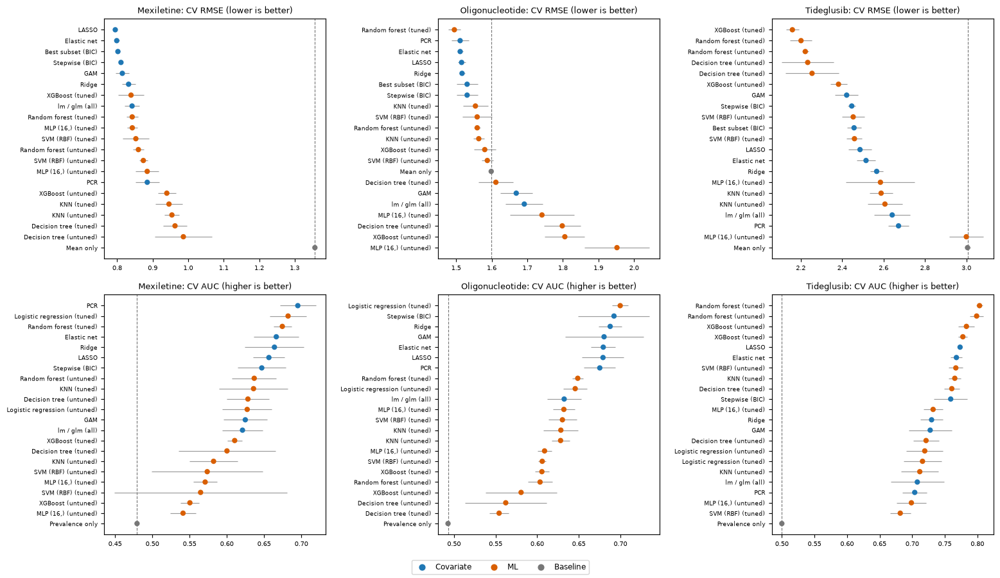
Non-zero coefficients (z-scored numeric, 0/1 dummies; sign on the raw outcome scale) or selected terms. PCR: number of components kept
| Outcome | Arm | LASSO | Elastic net | Stepwise (BIC) | Best subset | GAM terms (p<0.05) | PCR components |
|---|---|---|---|---|---|---|---|
| continuous outcome | Mexiletine | Disease duration (+0.12); Myotonia severity (-1.01); Cognitive function (+0.07); Creatine kinase (-0.03) | Somatic mosaicism (-0.01); Disease duration (+0.13); Myotonia severity (-0.97); Cognitive function (+0.08); Creatine kinase (-0.04) | Myotonia severity (-1.08); Disease duration (+0.16) | Disease duration (+0.16); Myotonia severity (-1.08) | log10 CTG repeats; Myotonia severity; PR interval; Family history = Yes; Family history = Unknown | 12 |
| continuous outcome | Oligonucleotide | log10 CTG repeats (+0.43); Disease duration (+0.11); Myotonia severity (+0.08); Cognitive function (+0.02) | log10 CTG repeats (+0.42); Somatic mosaicism (+0.03); Disease duration (+0.15); Myotonia severity (+0.14); Cognitive function (+0.08); BMI (-0.02); Family history = Yes (-0.11) | log10 CTG repeats (+0.62); Family history = Yes (-0.61) | log10 CTG repeats (+0.62); Family history = Yes (-0.61) | log10 CTG repeats; Disease duration; PR interval; Creatine kinase; Family history = Yes | 4 |
| continuous outcome | Tideglusib | Somatic mosaicism (+0.21); Disease duration (-0.31); Myotonia severity (+0.07); Cognitive function (-1.48) | Somatic mosaicism (+0.21); Disease duration (-0.32); Myotonia severity (+0.10); Cognitive function (-1.40) | Disease duration (-1.17); Muscle strength (-0.83); Cognitive function (-1.70) | Disease duration (-1.17); Muscle strength (-0.83); Cognitive function (-1.70) | Age at onset; Disease duration; Muscle strength; Cognitive function | 9 |
| responder label | Mexiletine | log10 CTG repeats (+0.25); Myotonia severity (+0.30); Muscle strength (+0.01); Cognitive function (-0.06) | log10 CTG repeats (+0.21); Age at onset (-0.03); Myotonia severity (+0.24); Cognitive function (-0.06) | Myotonia severity (+0.93); Family history = Yes (+2.21); Family history = Unknown (+2.39) | n/a (continuous only) | Family history = Yes; Family history = Unknown; Phenotype = juvenile onset | 1 |
| responder label | Oligonucleotide | log10 CTG repeats (+0.61); Disease duration (+0.25); Myotonia severity (+0.07); Cognitive function (+0.07); Creatine kinase (-0.05) | log10 CTG repeats (+0.44); Disease duration (+0.18); Myotonia severity (+0.17); Muscle strength (-0.06); Cognitive function (+0.05); Creatine kinase (-0.05) | log10 CTG repeats (+0.91); Disease duration (+0.48) | n/a (continuous only) | log10 CTG repeats; Age at onset; Disease duration; Creatine kinase; Albumin | 4 |
| responder label | Tideglusib | Myotonia severity (+0.15); Cognitive function (-0.86) | Somatic mosaicism (+0.01); Disease duration (-0.02); Myotonia severity (+0.24); PR interval (-0.10); Cognitive function (-0.83); Creatine kinase (-0.07) | Cognitive function (-1.27) | n/a (continuous only) | Muscle strength; Cognitive function | 9 |
For Mexiletine the continuous outcome is a change where more negative is better, so a negative coefficient means a better response. Different selectors keep different sets: this is expected with correlated covariates and is why Step 6.5 asks several selectors, resampling and a shuffled-outcome null before calling a covariate signal.
Per arm and outcome the best covariate model and the best ML model (tuned and untuned rows pooled) are picked by TRAIN CV alone, before any test row exists in the analysis. These are the models carried into Step 6.
| Arm | Outcome | CV metric | Primary covariate model | Primary ML model | Baseline | Both beat baseline in CV |
|---|---|---|---|---|---|---|
| Mexiletine | continuous outcome | RMSE | LASSO (0.795) | XGBoost (tuned) (0.839) | Mean only (1.357) | yes |
| Mexiletine | responder label | AUC | PCR (0.695) | Logistic regression (tuned) (0.682) | Prevalence only (0.480) | yes |
| Oligonucleotide | continuous outcome | RMSE | PCR (1.511) | Random forest (tuned) (1.495) | Mean only (1.599) | yes |
| Oligonucleotide | responder label | AUC | Stepwise (BIC) (0.692) | Logistic regression (tuned) (0.700) | Prevalence only (0.493) | yes |
| Tideglusib | continuous outcome | RMSE | GAM (2.422) | XGBoost (tuned) (2.160) | Mean only (3.006) | yes |
| Tideglusib | responder label | AUC | LASSO (0.773) | Random forest (tuned) (0.803) | Prevalence only (0.500) | yes |
One collapsible block per method. All figures use TRAIN only: the fitted-model diagnostics come from the full-train fit, and every prediction panel is the out-of-fold CV prediction (averaged over the 3 CV repeats; observed = the training patient's own value). ML blocks show the untuned and tuned variants together. No test number appears here.
Settings: lm (continuous) / binomial glm (label), all columns. Watch out: Assumes linear effects; sensitive to outliers; will not capture non-linear effects.
M[["lm / glm (all covariates)"]] <- function(d, nd) { m <- FIT(rhs(fnames(d)), d); list(pred = prd(m, nd), terms = terms_of(m)) }CV result (train, repeated 5-fold x3; mean ± SD)
| Variant | Outcome | Mexiletine | Oligonucleotide | Tideglusib |
|---|---|---|---|---|
| - | continuous outcome (CV RMSE) | 0.842 ± 0.021 | 1.692 ± 0.052 | 2.642 ± 0.086 |
| - | responder label (CV AUC) | 0.621 ± 0.027 | 0.632 ± 0.021 | 0.708 ± 0.041 |
Characteristic figure
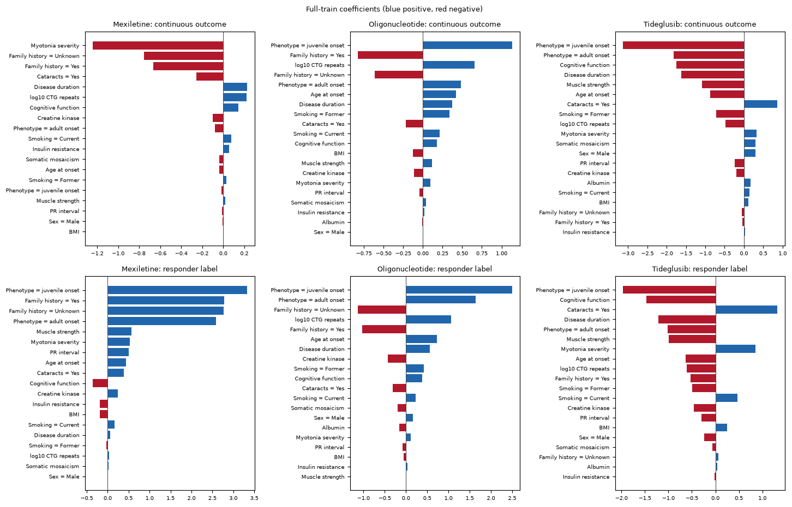
Out-of-fold prediction: continuous outcome obs vs pred (top), responder-label ROC (bottom)
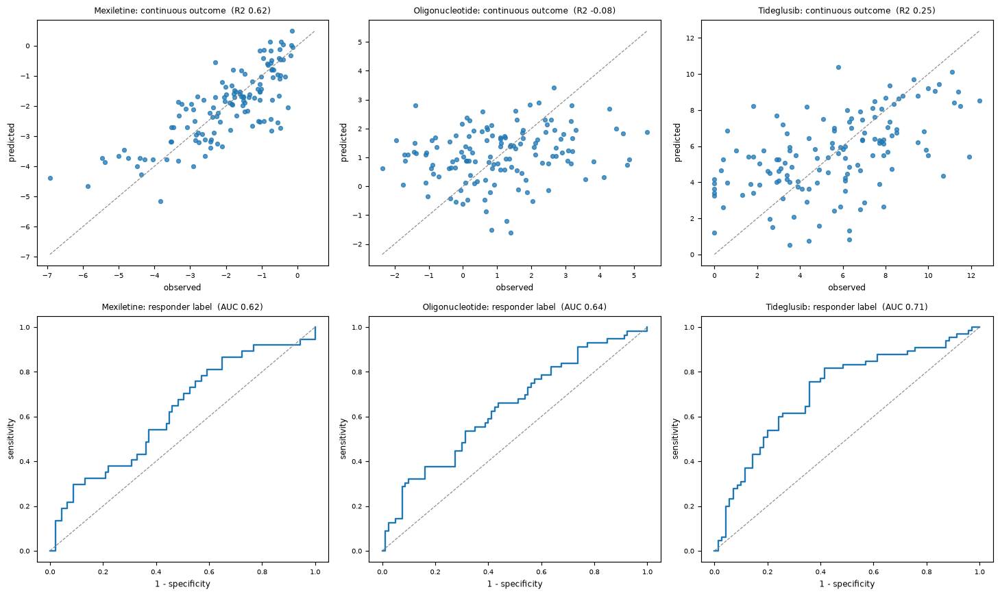
Retained terms: all covariates (no selection; full model).
Settings: MASS::stepAIC, direction both, penalty log(n). Watch out: Unstable: a slightly different dataset can select a very different set; do not treat the final model as the truth.
M[["Stepwise both (BIC)"]] <- function(d, nd) {
full <- FIT(rhs(fnames(d)), d); m <- stepAIC(full, direction = "both", trace = 0, k = log(nrow(d))); list(pred = prd(m, nd), terms = terms_of(m)) }CV result (train, repeated 5-fold x3; mean ± SD)
| Variant | Outcome | Mexiletine | Oligonucleotide | Tideglusib |
|---|---|---|---|---|
| - | continuous outcome (CV RMSE) | 0.811 ± 0.003 | 1.531 ± 0.030 | 2.446 ± 0.019 |
| - | responder label (CV AUC) | 0.647 ± 0.033 | 0.692 ± 0.043 | 0.759 ± 0.026 |
Characteristic figure
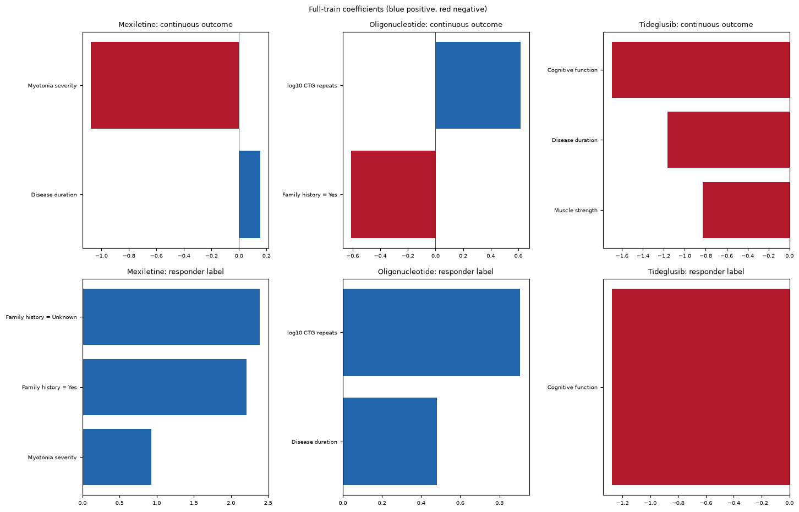
Out-of-fold prediction: continuous outcome obs vs pred (top), responder-label ROC (bottom)
Retained terms (full-train):
Mexiletine continuous outcome: Myotonia severity (-1.08), Disease duration (+0.16)
Oligonucleotide continuous outcome: log10 CTG repeats (+0.62), Family history = Yes (-0.61)
Tideglusib continuous outcome: Disease duration (-1.17), Muscle strength (-0.83), Cognitive function (-1.70)
Mexiletine responder label: Myotonia severity (+0.93), Family history = Yes (+2.21), Family history = Unknown (+2.39)
Oligonucleotide responder label: log10 CTG repeats (+0.91), Disease duration (+0.48)
Tideglusib responder label: Cognitive function (-1.27)
Settings: leaps::regsubsets, exhaustive, nvmax 10, lowest BIC (continuous only). Watch out: Costly beyond about 20-25 covariates; choose by BIC, not R2.
if (task == "reg") M[["Best subset (leaps, BIC, nvmax=10)"]] <- function(d, nd) {
fs <- fnames(d); rs <- regsubsets(x = as.matrix(d[fs]), y = d$.t, nvmax = 10, really.big = TRUE, method = "exhaustive"); s <- summary(rs); id <- which.min(s$bic)
co <- coef(rs, id); xn <- cbind(1, as.matrix(nd[names(co)[-1]])); list(pred = as.numeric(xn %*% co), terms = co[-1]) }CV result (train, repeated 5-fold x3; mean ± SD)
| Variant | Outcome | Mexiletine | Oligonucleotide | Tideglusib |
|---|---|---|---|---|
| - | continuous outcome (CV RMSE) | 0.802 ± 0.006 | 1.531 ± 0.030 | 2.458 ± 0.035 |
| - | responder label (CV AUC) | n/a | n/a | n/a |
Characteristic figure
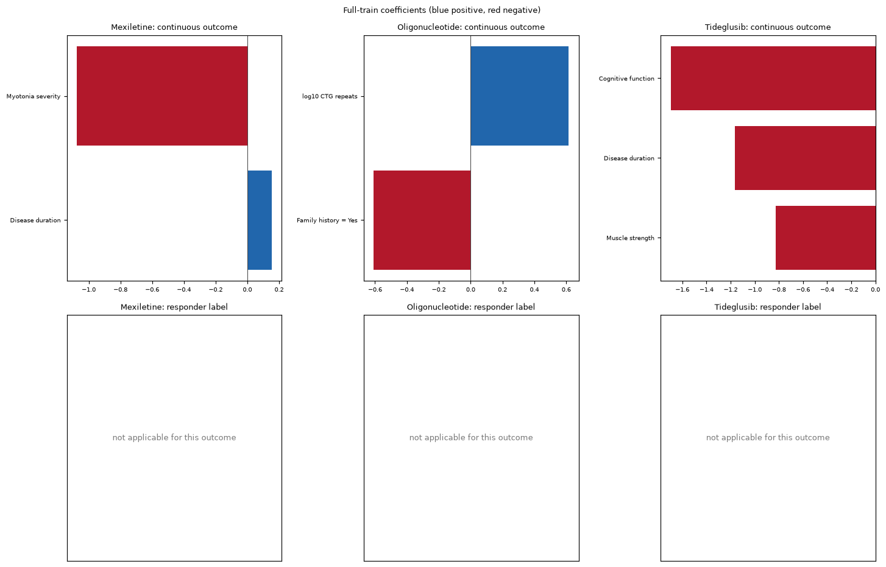
Out-of-fold prediction: continuous outcome obs vs pred (top), responder-label ROC (bottom)
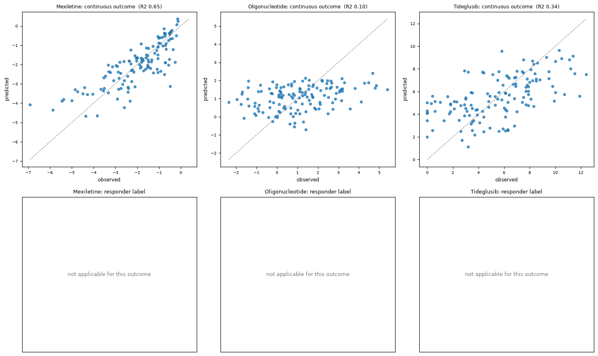
Retained terms (full-train):
Mexiletine continuous outcome: Disease duration (+0.16), Myotonia severity (-1.08)
Oligonucleotide continuous outcome: log10 CTG repeats (+0.62), Family history = Yes (-0.61)
Tideglusib continuous outcome: Disease duration (-1.17), Muscle strength (-0.83), Cognitive function (-1.70)
Mexiletine responder label: n/a
Oligonucleotide responder label: n/a
Tideglusib responder label: n/a
Settings: glmnet alpha=0, lambda by 10-fold CV. Watch out: Needs CV for lambda; keeps every covariate (shrunk, never zero).
gn <- function(alpha) function(d, nd) {
set.seed(1); cvm <- gn_fit(d, task, alpha); fs <- fnames(d); s <- "lambda.min"
p <- as.numeric(predict(cvm, as.matrix(nd[fs]), s = s, type = "response")); cf <- as.matrix(coef(cvm, s = s))[-1, 1]; list(pred = p, terms = cf[cf != 0]) }
M[["Ridge (glmnet)"]] <- gn(0); M[["LASSO (glmnet, lambda.min)"]] <- gn(1); M[["Elastic net (glmnet, alpha=.5)"]] <- gn(0.5)
# M[["Ridge (glmnet)"]] <- gn(0)CV result (train, repeated 5-fold x3; mean ± SD)
| Variant | Outcome | Mexiletine | Oligonucleotide | Tideglusib |
|---|---|---|---|---|
| - | continuous outcome (CV RMSE) | 0.832 ± 0.019 | 1.517 ± 0.008 | 2.567 ± 0.030 |
| - | responder label (CV AUC) | 0.664 ± 0.040 | 0.688 ± 0.014 | 0.730 ± 0.017 |
Characteristic figure
Coefficient path vs log(lambda), lambda.min marked (train-only fit)
Continuous outcome
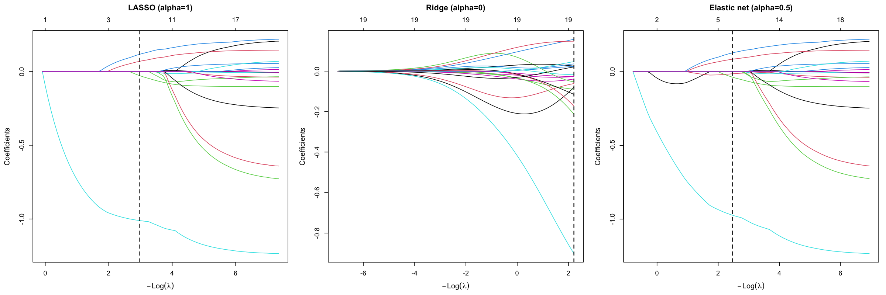
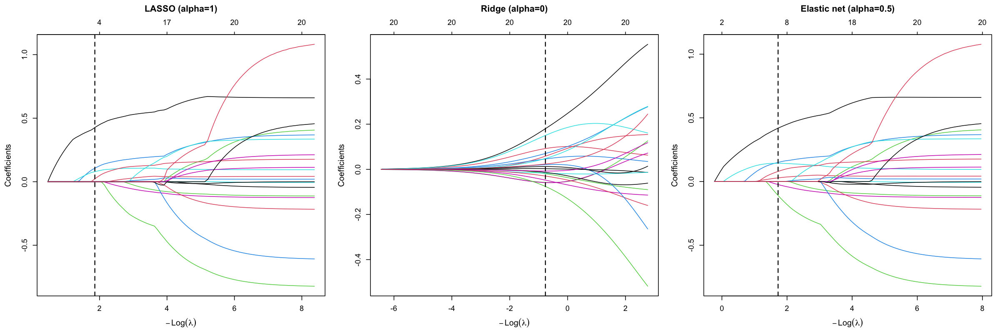
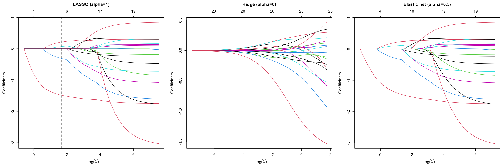
Responder label
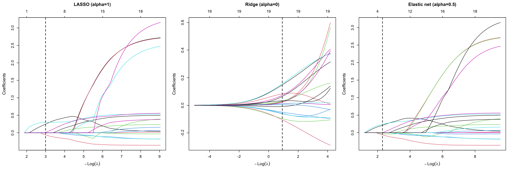
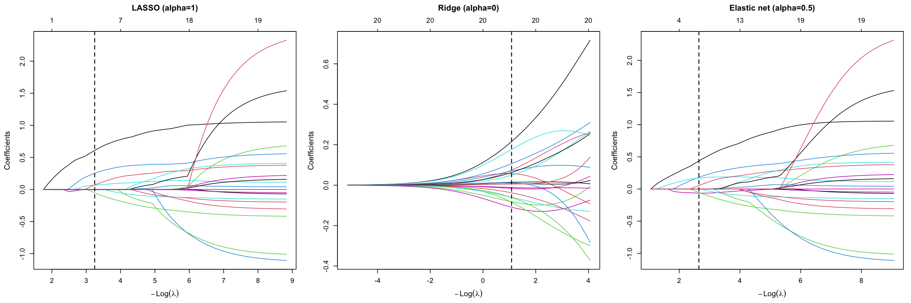
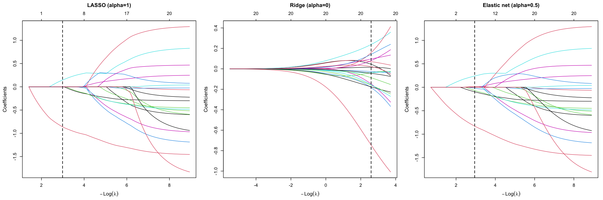
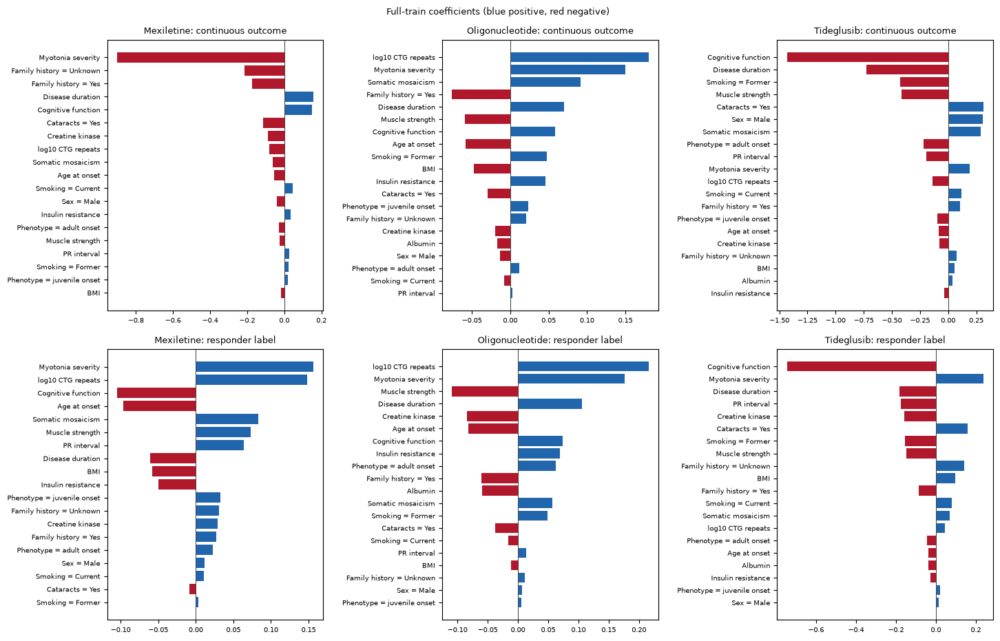
Out-of-fold prediction: continuous outcome obs vs pred (top), responder-label ROC (bottom)
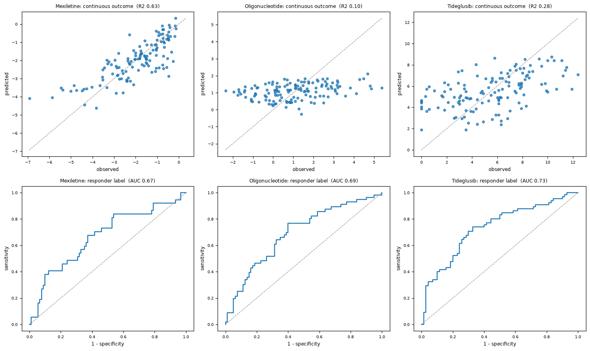
Retained terms: all covariates (no selection; ridge shrinks but never zeroes).
Settings: glmnet alpha=1, lambda.min by 10-fold CV. Watch out: Can arbitrarily drop one of two highly correlated covariates; important variables may vanish.
gn <- function(alpha) function(d, nd) {
set.seed(1); cvm <- gn_fit(d, task, alpha); fs <- fnames(d); s <- "lambda.min"
p <- as.numeric(predict(cvm, as.matrix(nd[fs]), s = s, type = "response")); cf <- as.matrix(coef(cvm, s = s))[-1, 1]; list(pred = p, terms = cf[cf != 0]) }
M[["Ridge (glmnet)"]] <- gn(0); M[["LASSO (glmnet, lambda.min)"]] <- gn(1); M[["Elastic net (glmnet, alpha=.5)"]] <- gn(0.5)
# M[["LASSO (glmnet, lambda.min)"]] <- gn(1)CV result (train, repeated 5-fold x3; mean ± SD)
| Variant | Outcome | Mexiletine | Oligonucleotide | Tideglusib |
|---|---|---|---|---|
| - | continuous outcome (CV RMSE) | 0.795 ± 0.003 | 1.515 ± 0.011 | 2.486 ± 0.056 |
| - | responder label (CV AUC) | 0.656 ± 0.021 | 0.679 ± 0.025 | 0.773 ± 0.003 |
Characteristic figure
Coefficient path vs log(lambda), lambda.min marked (train-only fit)
Continuous outcome
Responder label
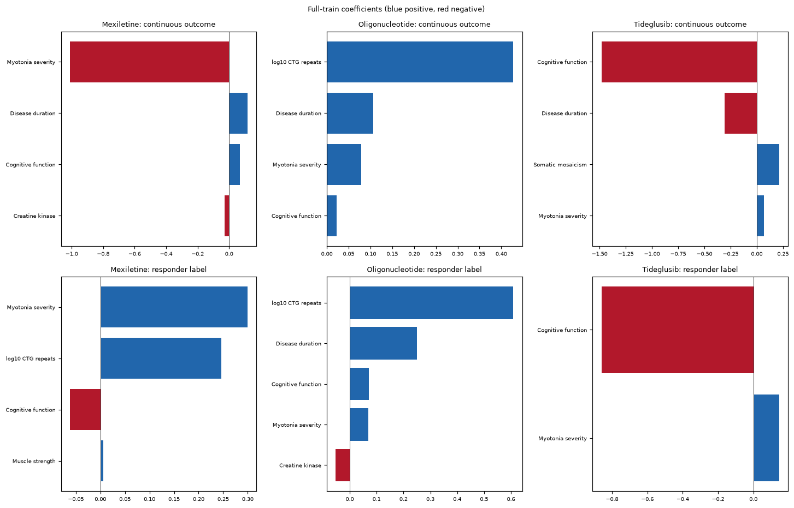
Out-of-fold prediction: continuous outcome obs vs pred (top), responder-label ROC (bottom)
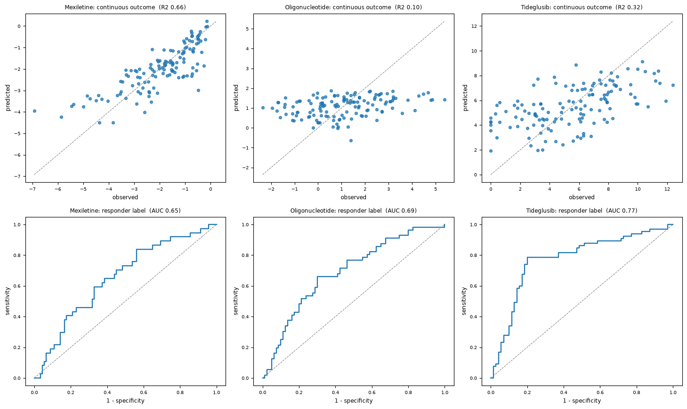
Retained terms (full-train):
Mexiletine continuous outcome: Disease duration (+0.12), Myotonia severity (-1.01), Cognitive function (+0.07), Creatine kinase (-0.03)
Oligonucleotide continuous outcome: log10 CTG repeats (+0.43), Disease duration (+0.11), Myotonia severity (+0.08), Cognitive function (+0.02)
Tideglusib continuous outcome: Somatic mosaicism (+0.21), Disease duration (-0.31), Myotonia severity (+0.07), Cognitive function (-1.48)
Mexiletine responder label: log10 CTG repeats (+0.25), Myotonia severity (+0.30), Muscle strength (+0.01), Cognitive function (-0.06)
Oligonucleotide responder label: log10 CTG repeats (+0.61), Disease duration (+0.25), Myotonia severity (+0.07), Cognitive function (+0.07), Creatine kinase (-0.05)
Tideglusib responder label: Myotonia severity (+0.15), Cognitive function (-0.86)
Settings: glmnet alpha=0.5, lambda.min by 10-fold CV. Watch out: Needs CV for lambda; mixes the ridge and LASSO behaviour.
gn <- function(alpha) function(d, nd) {
set.seed(1); cvm <- gn_fit(d, task, alpha); fs <- fnames(d); s <- "lambda.min"
p <- as.numeric(predict(cvm, as.matrix(nd[fs]), s = s, type = "response")); cf <- as.matrix(coef(cvm, s = s))[-1, 1]; list(pred = p, terms = cf[cf != 0]) }
M[["Ridge (glmnet)"]] <- gn(0); M[["LASSO (glmnet, lambda.min)"]] <- gn(1); M[["Elastic net (glmnet, alpha=.5)"]] <- gn(0.5)
# M[["Elastic net (glmnet, alpha=.5)"]] <- gn(0.5)CV result (train, repeated 5-fold x3; mean ± SD)
| Variant | Outcome | Mexiletine | Oligonucleotide | Tideglusib |
|---|---|---|---|---|
| - | continuous outcome (CV RMSE) | 0.799 ± 0.007 | 1.511 ± 0.008 | 2.515 ± 0.045 |
| - | responder label (CV AUC) | 0.666 ± 0.030 | 0.679 ± 0.015 | 0.768 ± 0.009 |
Characteristic figure
Coefficient path vs log(lambda), lambda.min marked (train-only fit)
Continuous outcome
Responder label
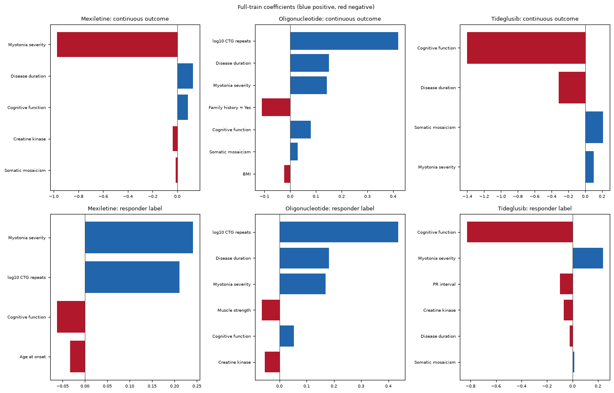
Out-of-fold prediction: continuous outcome obs vs pred (top), responder-label ROC (bottom)
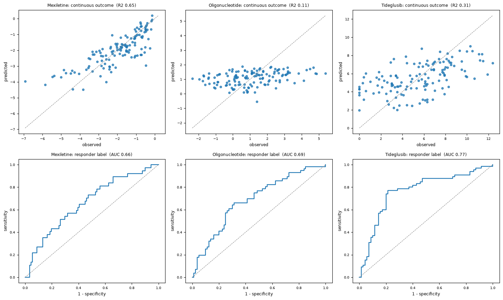
Retained terms (full-train):
Mexiletine continuous outcome: Somatic mosaicism (-0.01), Disease duration (+0.13), Myotonia severity (-0.97), Cognitive function (+0.08), Creatine kinase (-0.04)
Oligonucleotide continuous outcome: log10 CTG repeats (+0.42), Somatic mosaicism (+0.03), Disease duration (+0.15), Myotonia severity (+0.14), Cognitive function (+0.08), BMI (-0.02), Family history = Yes (-0.11)
Tideglusib continuous outcome: Somatic mosaicism (+0.21), Disease duration (-0.32), Myotonia severity (+0.10), Cognitive function (-1.40)
Mexiletine responder label: log10 CTG repeats (+0.21), Age at onset (-0.03), Myotonia severity (+0.24), Cognitive function (-0.06)
Oligonucleotide responder label: log10 CTG repeats (+0.44), Disease duration (+0.18), Myotonia severity (+0.17), Muscle strength (-0.06), Cognitive function (+0.05), Creatine kinase (-0.05)
Tideglusib responder label: Somatic mosaicism (+0.01), Disease duration (-0.02), Myotonia severity (+0.24), PR interval (-0.10), Cognitive function (-0.83), Creatine kinase (-0.07)
Settings: mgcv: s(x, k=5) per numeric covariate, dummies linear, REML, select=TRUE. Watch out: Harder to interpret; k too small misses patterns, too large overfits.
M[["GAM (mgcv, s(k=5), REML, select)"]] <- function(d, nd) {
fs <- fnames(d); dm <- fs[sapply(d[fs], isdum)]; ct <- setdiff(fs, dm)
m <- gam(as.formula(paste(".t ~", paste(c(sprintf("s(%s, k=5)", ct), dm), collapse = " + "))), data = d, family = fam, method = "REML", select = TRUE)
st <- summary(m)$s.table; pt <- summary(m)$p.table; sel <- c(gsub("^s\\(|\\)$", "", rownames(st)[st[, ncol(st)] < 0.05]), rownames(pt)[pt[, ncol(pt)] < 0.05 & rownames(pt) != "(Intercept)"])
list(pred = as.numeric(predict(m, nd, type = "response")), terms = setNames(rep(1, length(sel)), sel)) }CV result (train, repeated 5-fold x3; mean ± SD)
| Variant | Outcome | Mexiletine | Oligonucleotide | Tideglusib |
|---|---|---|---|---|
| - | continuous outcome (CV RMSE) | 0.815 ± 0.019 | 1.669 ± 0.045 | 2.422 ± 0.056 |
| - | responder label (CV AUC) | 0.625 ± 0.029 | 0.680 ± 0.047 | 0.728 ± 0.033 |
Characteristic figure
Partial smooths (train-only fit)
Continuous outcome
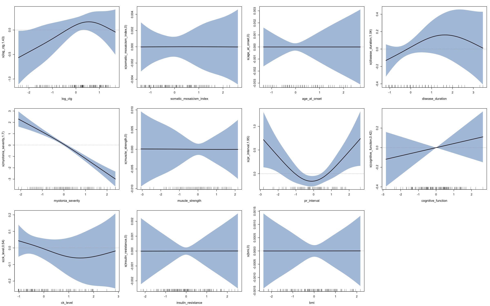
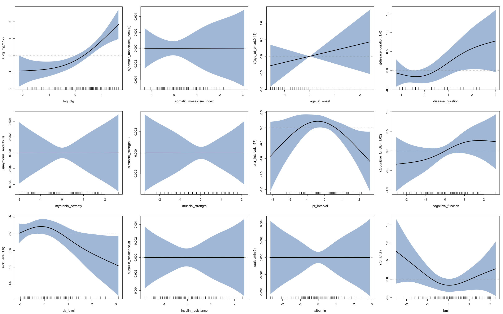
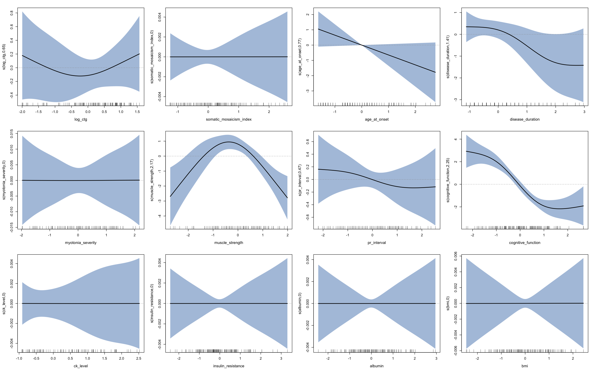
Responder label
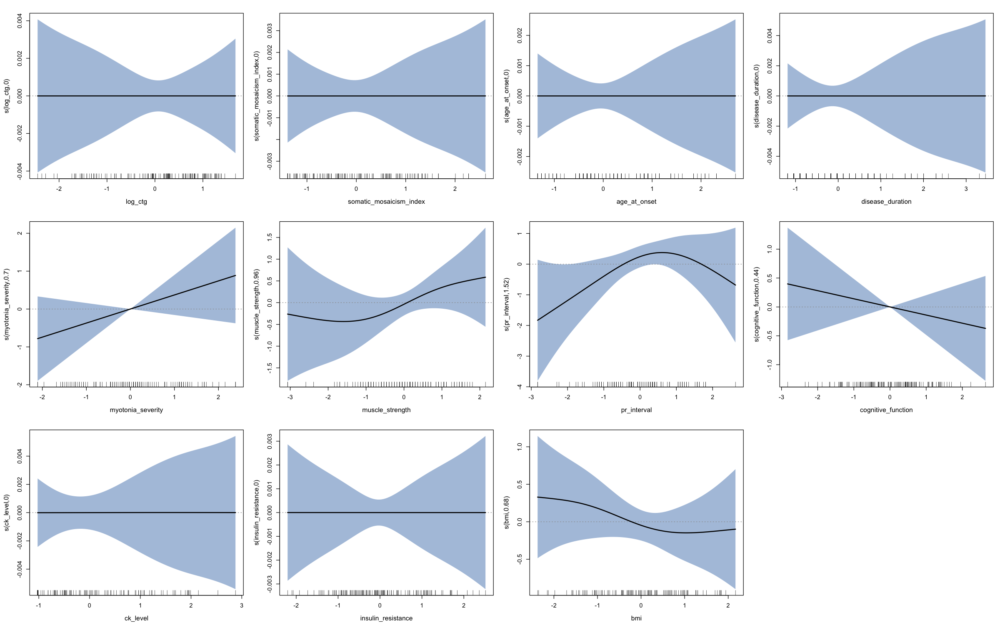
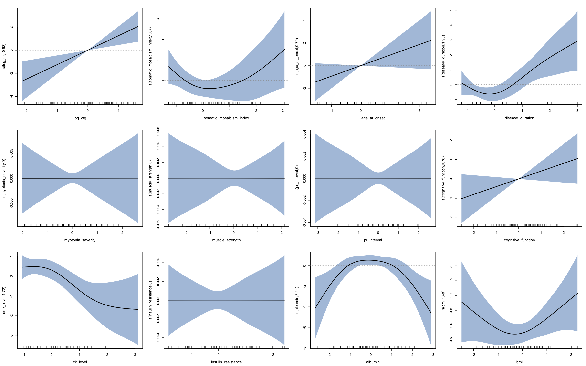
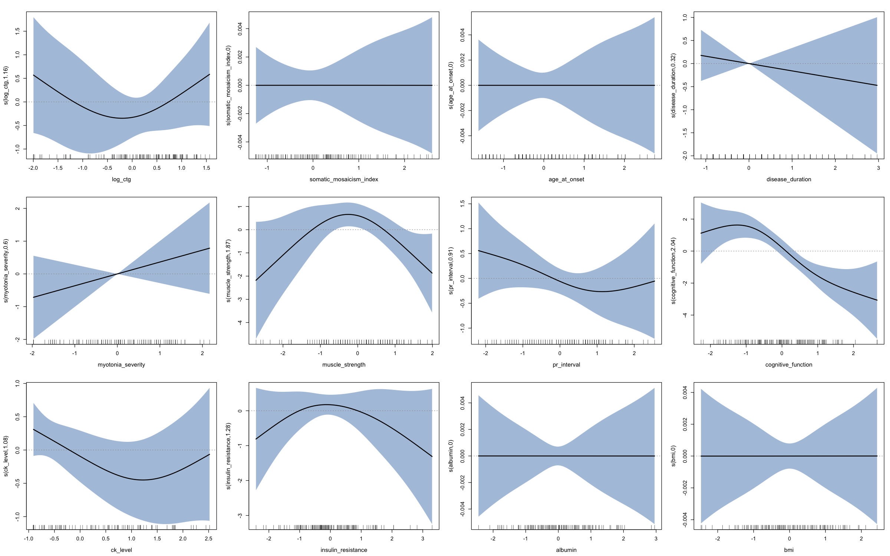
Out-of-fold prediction: continuous outcome obs vs pred (top), responder-label ROC (bottom)
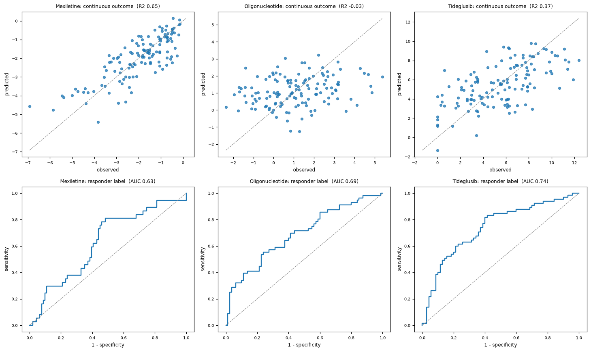
Terms with p<0.05 (smooth or dummy), full-train GAM. Mexiletine continuous outcome: log10 CTG repeats; Myotonia severity; PR interval; Family history = Yes; Family history = Unknown | Oligonucleotide continuous outcome: log10 CTG repeats; Disease duration; PR interval; Creatine kinase; Family history = Yes | Tideglusib continuous outcome: Age at onset; Disease duration; Muscle strength; Cognitive function | Mexiletine responder label: Family history = Yes; Family history = Unknown; Phenotype = juvenile onset | Oligonucleotide responder label: log10 CTG repeats; Age at onset; Disease duration; Creatine kinase; Albumin | Tideglusib responder label: Muscle strength; Cognitive function.
Settings: prcomp on the design, number of components (max 12) by 5-fold CV. Watch out: Components are hard to interpret clinically; PCA is unsupervised.
M[["PCR (prcomp, k by 5-fold CV)"]] <- function(d, nd) {
fs <- fnames(d); pc <- prcomp(d[fs], center = TRUE, scale. = FALSE); S <- pc$x; set.seed(1); idx <- sample(rep(1:5, length.out = nrow(d))); kmax <- min(12, ncol(S))
lmf <- function(dd) if (task == "reg") lm(.t ~ ., dd) else glm(.t ~ ., dd, family = binomial)
err <- sapply(1:kmax, function(k) mean(sapply(1:5, function(i) { mm <- lmf(data.frame(.t = d$.t[idx != i], S[idx != i, 1:k, drop = FALSE]))
p <- predict(mm, data.frame(S[idx == i, 1:k, drop = FALSE]), type = "response"); mean((d$.t[idx == i] - p)^2) })))
k <- which.min(err); mm <- lmf(data.frame(.t = d$.t, S[, 1:k, drop = FALSE])); Sn <- predict(pc, nd[fs])
list(pred = as.numeric(predict(mm, data.frame(Sn[, 1:k, drop = FALSE]), type = "response")), terms = setNames(rep(1, k), paste0("PC", 1:k))) }CV result (train, repeated 5-fold x3; mean ± SD)
| Variant | Outcome | Mexiletine | Oligonucleotide | Tideglusib |
|---|---|---|---|---|
| - | continuous outcome (CV RMSE) | 0.885 ± 0.034 | 1.511 ± 0.025 | 2.672 ± 0.050 |
| - | responder label (CV AUC) | 0.695 ± 0.024 | 0.675 ± 0.019 | 0.704 ± 0.019 |
Characteristic figure
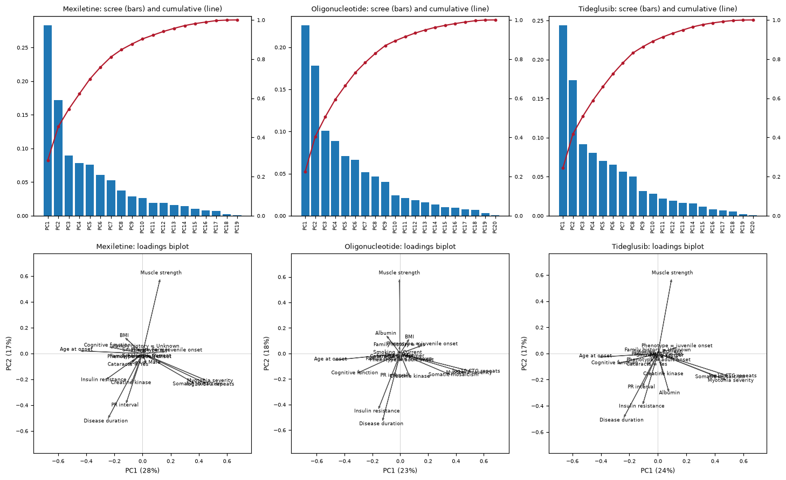
Out-of-fold prediction: continuous outcome obs vs pred (top), responder-label ROC (bottom)
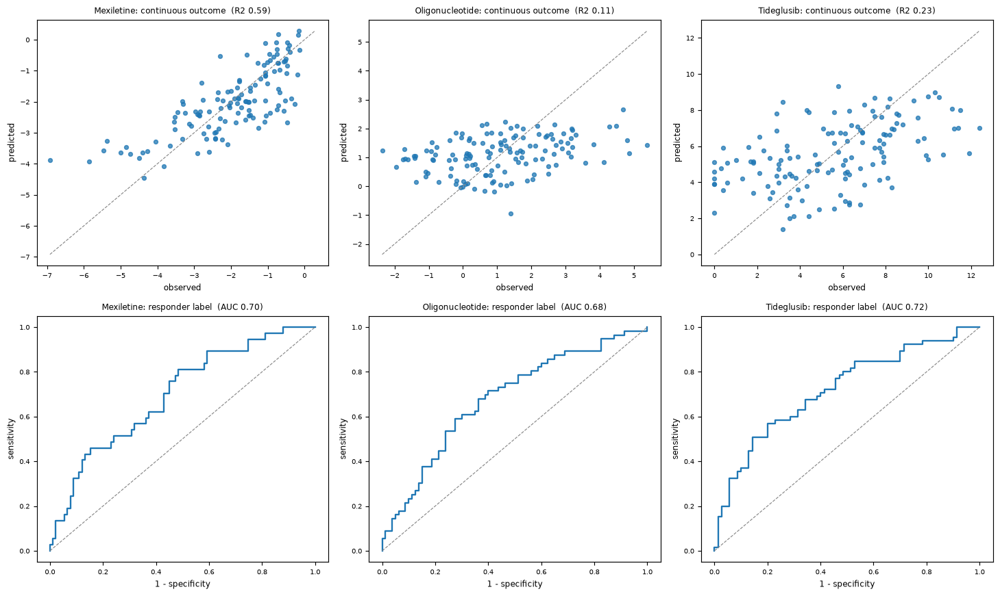
Components kept by 5-fold CV (full-train fit; maximum 12): Mexiletine continuous outcome: 12; Oligonucleotide continuous outcome: 4; Tideglusib continuous outcome: 9; Mexiletine responder label: 1; Oligonucleotide responder label: 4; Tideglusib responder label: 9. The PCA below is unsupervised; later components are not necessarily dropped.
Reference: mean (continuous) / prevalence (label). Reference: predicts the training mean for everyone. Reference: predicts the training responder share (AUC 0.5).
CV result (train, repeated 5-fold x3; mean ± SD)
| Variant | Outcome | Mexiletine | Oligonucleotide | Tideglusib |
|---|---|---|---|---|
| - | continuous outcome (CV RMSE) | 1.357 ± 0.003 | 1.599 ± 0.002 | 3.006 ± 0.014 |
| - | responder label (CV AUC) | 0.480 ± 0.000 | 0.493 ± 0.000 | 0.500 ± 0.000 |
Characteristic figure
Baselines have no fitted structure.
Out-of-fold prediction: continuous outcome obs vs pred (top), responder-label ROC (bottom)
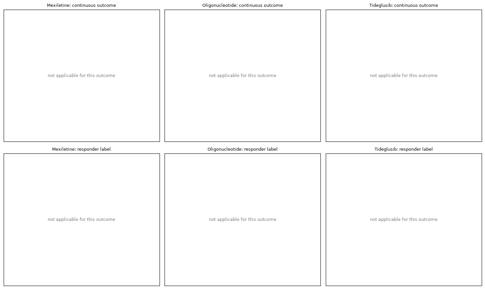
Untuned: max_iter 2000. Tuned grid (inner 3-fold): C in {0.01, 0.1, 1, 10, 100}. Watch out: Assumes straight-line effects; can miss interactions.
if not reg: add("Logistic regression", LogisticRegression(max_iter=2000), {"C": [0.01, 0.1, 1, 10, 100]})
out.append((f"{r['name']} (tuned, GridSearchCV)", (lambda r=r, cv=cv: GridSearchCV(mk(r), {f"est__{k}": v for k, v in r["grid"].items()}, scoring=r["scoring"], cv=cv, n_jobs=1)), True, r))CV result (train, repeated 5-fold x3; mean ± SD)
| Variant | Outcome | Mexiletine | Oligonucleotide | Tideglusib |
|---|---|---|---|---|
| untuned | continuous outcome (CV RMSE) | n/a | n/a | n/a |
| untuned | responder label (CV AUC) | 0.627 ± 0.033 | 0.646 ± 0.014 | 0.719 ± 0.028 |
| tuned | continuous outcome (CV RMSE) | n/a | n/a | n/a |
| tuned | responder label (CV AUC) | 0.682 ± 0.025 | 0.700 ± 0.010 | 0.716 ± 0.029 |
Characteristic figure
No natural diagram for this method; see the prediction grid below.
Out-of-fold prediction: continuous outcome obs vs pred (top), responder-label ROC (bottom)
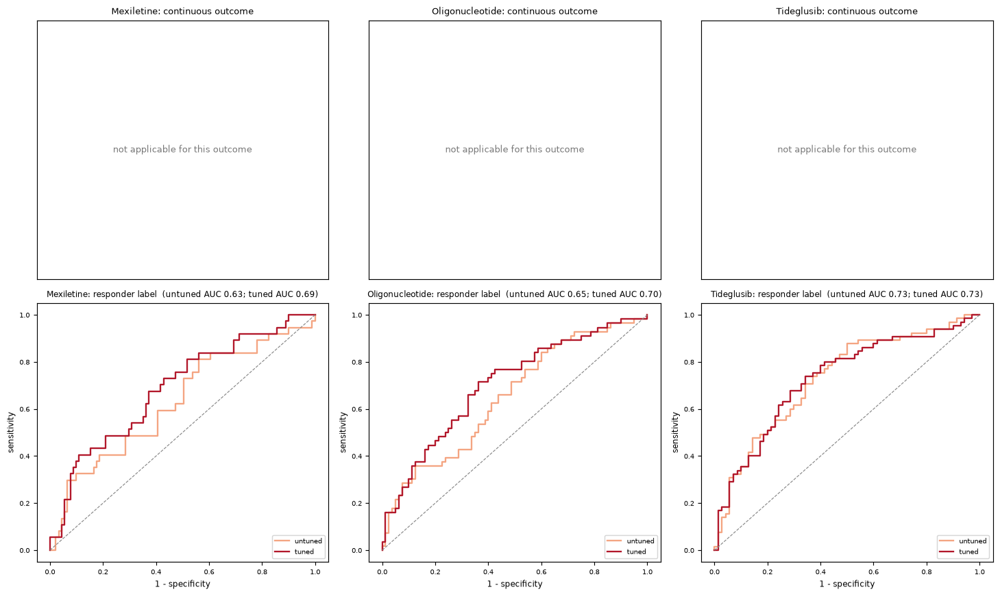
Untuned: max_depth 3. Tuned grid (inner 3-fold): max_depth {2,3,5,None} x min_samples_leaf {1,5,10}. Watch out: A deep tree memorises noise; limit the depth.
TREE_GRID = {"max_depth": [2, 3, 5, None], "min_samples_leaf": [1, 5, 10]}
add("Decision tree", (DecisionTreeRegressor(max_depth=3, random_state=S) if reg else DecisionTreeClassifier(max_depth=3, random_state=S)), TREE_GRID)
out.append((f"{r['name']} (tuned, GridSearchCV)", (lambda r=r, cv=cv: GridSearchCV(mk(r), {f"est__{k}": v for k, v in r["grid"].items()}, scoring=r["scoring"], cv=cv, n_jobs=1)), True, r))CV result (train, repeated 5-fold x3; mean ± SD)
| Variant | Outcome | Mexiletine | Oligonucleotide | Tideglusib |
|---|---|---|---|---|
| untuned | continuous outcome (CV RMSE) | 0.986 ± 0.080 | 1.798 ± 0.052 | 2.234 ± 0.125 |
| untuned | responder label (CV AUC) | 0.628 ± 0.028 | 0.562 ± 0.049 | 0.721 ± 0.020 |
| tuned | continuous outcome (CV RMSE) | 0.963 ± 0.034 | 1.612 ± 0.048 | 2.255 ± 0.130 |
| tuned | responder label (CV AUC) | 0.600 ± 0.065 | 0.554 ± 0.012 | 0.761 ± 0.011 |
Characteristic figure
Fitted tree (train-only fit)
Continuous outcome
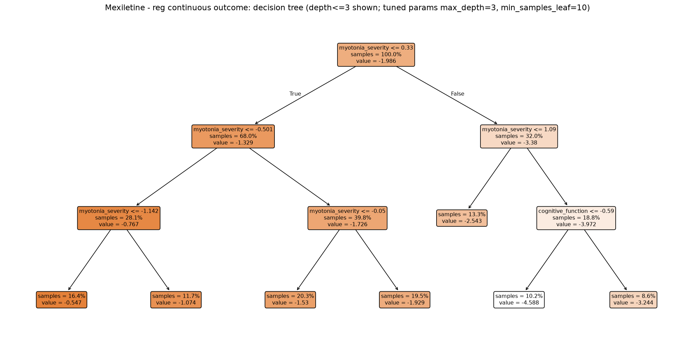
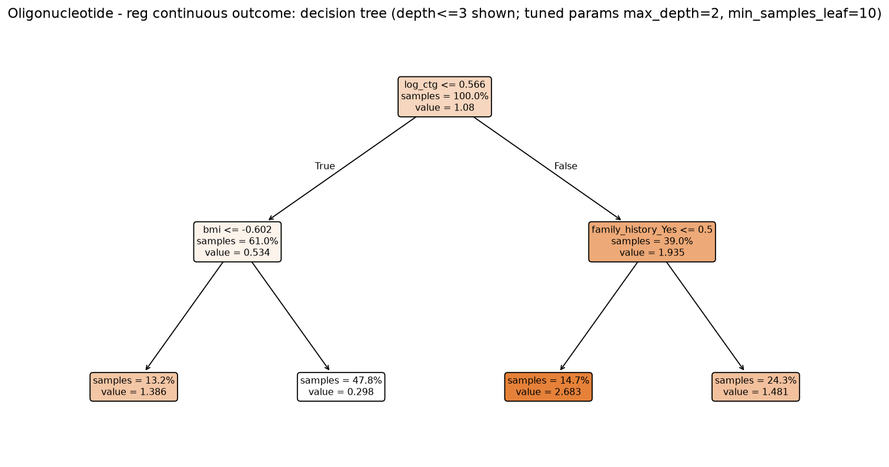
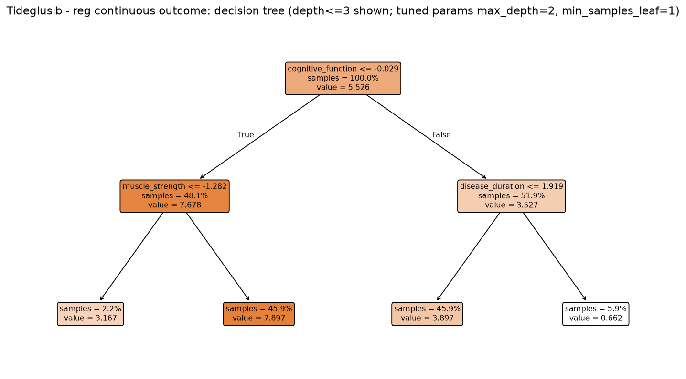
Responder label
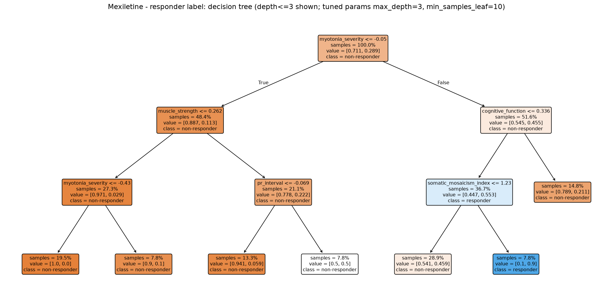
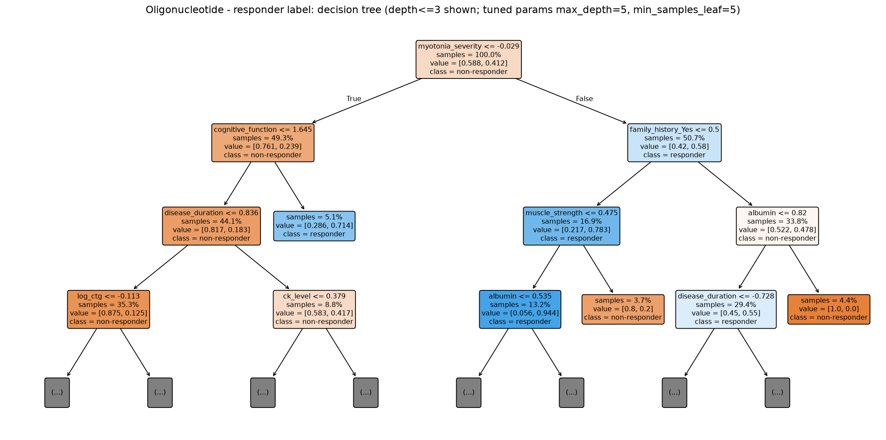
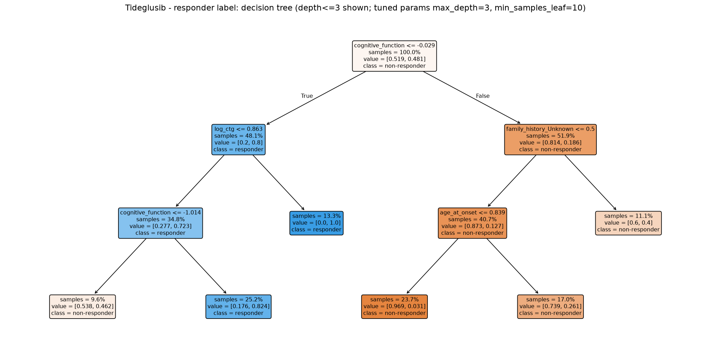
Out-of-fold prediction: continuous outcome obs vs pred (top), responder-label ROC (bottom)
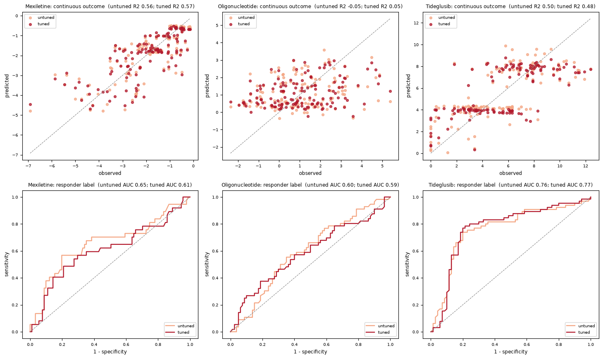
Untuned: 300 trees. Tuned grid (inner 3-fold): same grid as tree. Watch out: Harder to read; the vote hides the individual rules.
TREE_GRID = {"max_depth": [2, 3, 5, None], "min_samples_leaf": [1, 5, 10]}
add("Random forest", (RandomForestRegressor(300, random_state=S, n_jobs=1) if reg else RandomForestClassifier(300, random_state=S, n_jobs=1)), TREE_GRID)
out.append((f"{r['name']} (tuned, GridSearchCV)", (lambda r=r, cv=cv: GridSearchCV(mk(r), {f"est__{k}": v for k, v in r["grid"].items()}, scoring=r["scoring"], cv=cv, n_jobs=1)), True, r))CV result (train, repeated 5-fold x3; mean ± SD)
| Variant | Outcome | Mexiletine | Oligonucleotide | Tideglusib |
|---|---|---|---|---|
| untuned | continuous outcome (CV RMSE) | 0.860 ± 0.016 | 1.559 ± 0.009 | 2.222 ± 0.015 |
| untuned | responder label (CV AUC) | 0.637 ± 0.030 | 0.603 ± 0.014 | 0.799 ± 0.010 |
| tuned | continuous outcome (CV RMSE) | 0.842 ± 0.017 | 1.495 ± 0.018 | 2.201 ± 0.053 |
| tuned | responder label (CV AUC) | 0.674 ± 0.012 | 0.649 ± 0.006 | 0.803 ± 0.005 |
Characteristic figure
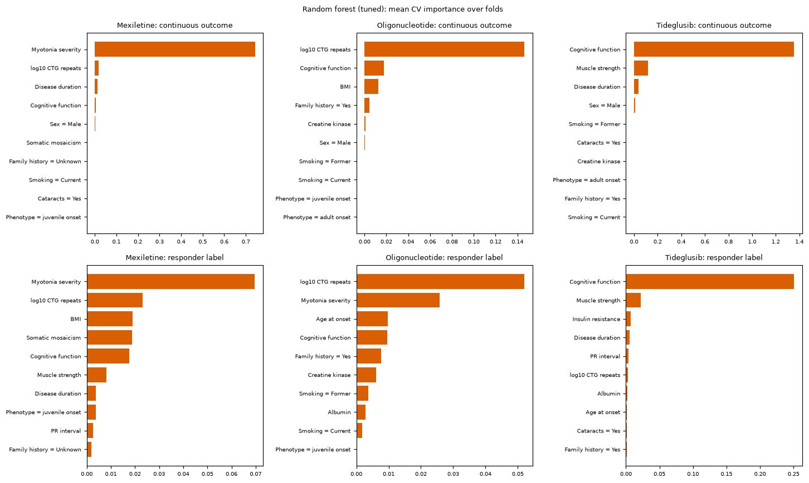
Top term per panel: Mexiletine continuous outcome: Myotonia severity (train verdict SIGNAL); Oligonucleotide continuous outcome: log10 CTG repeats (train verdict SIGNAL); Tideglusib continuous outcome: Cognitive function (train verdict SIGNAL); Mexiletine responder label: Myotonia severity (train verdict BORDERLINE); Oligonucleotide responder label: log10 CTG repeats (train verdict BORDERLINE); Tideglusib responder label: Cognitive function (train verdict SIGNAL).
Out-of-fold prediction: continuous outcome obs vs pred (top), responder-label ROC (bottom)
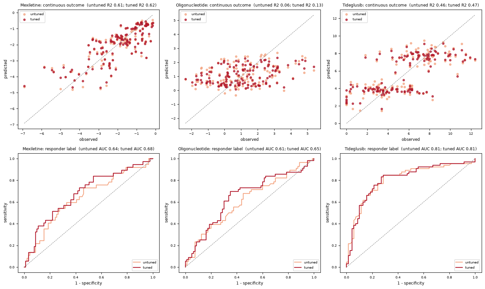
Untuned: RBF kernel, defaults. Tuned grid (inner 3-fold): C {0.1,1,10} x gamma {scale,0.01,0.1}. Watch out: Hard to explain to clinicians.
add("SVM (RBF)", _ttr(SVR(kernel="rbf")), _p("regressor", {"C": [0.1, 1, 10], "gamma": ["scale", 0.01, 0.1]}))
add("SVM (RBF)", SVC(kernel="rbf", probability=True, random_state=S), {"C": [0.1, 1, 10], "gamma": ["scale", 0.01, 0.1]})
out.append((f"{r['name']} (tuned, GridSearchCV)", (lambda r=r, cv=cv: GridSearchCV(mk(r), {f"est__{k}": v for k, v in r["grid"].items()}, scoring=r["scoring"], cv=cv, n_jobs=1)), True, r))CV result (train, repeated 5-fold x3; mean ± SD)
| Variant | Outcome | Mexiletine | Oligonucleotide | Tideglusib |
|---|---|---|---|---|
| untuned | continuous outcome (CV RMSE) | 0.874 ± 0.012 | 1.588 ± 0.016 | 2.453 ± 0.055 |
| untuned | responder label (CV AUC) | 0.574 ± 0.075 | 0.606 ± 0.005 | 0.767 ± 0.011 |
| tuned | continuous outcome (CV RMSE) | 0.853 ± 0.037 | 1.559 ± 0.042 | 2.459 ± 0.037 |
| tuned | responder label (CV AUC) | 0.565 ± 0.116 | 0.630 ± 0.017 | 0.682 ± 0.016 |
Characteristic figure
No natural diagram for this method; see the prediction grid below.
Out-of-fold prediction: continuous outcome obs vs pred (top), responder-label ROC (bottom)
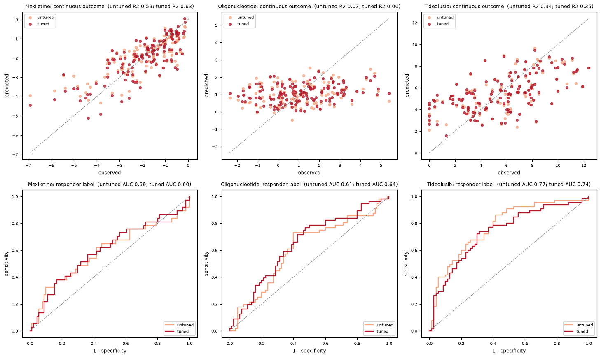
Untuned: k = 7. Tuned grid (inner 3-fold): k {3,5,7,11,15,21} x weights {uniform,distance}. Watch out: Noise covariates dilute similarity and can mislead the neighbours.
add("KNN", KNeighborsRegressor(7), {"n_neighbors": [3, 5, 7, 11, 15, 21], "weights": ["uniform", "distance"]})
add("KNN", KNeighborsClassifier(7), {"n_neighbors": [3, 5, 7, 11, 15, 21], "weights": ["uniform", "distance"]})
out.append((f"{r['name']} (tuned, GridSearchCV)", (lambda r=r, cv=cv: GridSearchCV(mk(r), {f"est__{k}": v for k, v in r["grid"].items()}, scoring=r["scoring"], cv=cv, n_jobs=1)), True, r))CV result (train, repeated 5-fold x3; mean ± SD)
| Variant | Outcome | Mexiletine | Oligonucleotide | Tideglusib |
|---|---|---|---|---|
| untuned | continuous outcome (CV RMSE) | 0.954 ± 0.021 | 1.564 ± 0.015 | 2.607 ± 0.083 |
| untuned | responder label (CV AUC) | 0.582 ± 0.033 | 0.628 ± 0.011 | 0.712 ± 0.029 |
| tuned | continuous outcome (CV RMSE) | 0.946 ± 0.037 | 1.554 ± 0.035 | 2.588 ± 0.056 |
| tuned | responder label (CV AUC) | 0.636 ± 0.046 | 0.628 ± 0.021 | 0.765 ± 0.010 |
Characteristic figure
No natural diagram for this method; see the prediction grid below.
Out-of-fold prediction: continuous outcome obs vs pred (top), responder-label ROC (bottom)
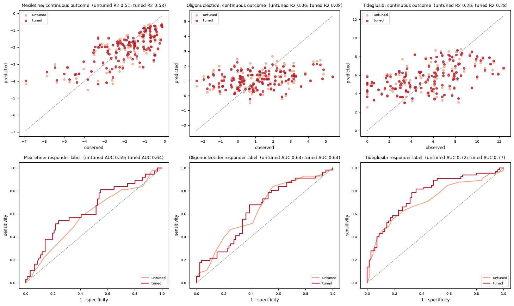
Untuned: 200 trees, depth 3. Tuned grid (inner 3-fold): depth {2,3,4} x trees {100,300} x lr {0.03,0.1}, subsample 0.8. Watch out: Many settings; with few patients it overfits quickly.
add("XGBoost", XGBRegressor(n_estimators=200, max_depth=3, random_state=S, n_jobs=1), {"max_depth": [2, 3, 4], "n_estimators": [100, 300], "learning_rate": [.03, .1], "subsample": [.8]})
add("XGBoost", XGBClassifier(n_estimators=200, max_depth=3, random_state=S, n_jobs=1), {"max_depth": [2, 3, 4], "n_estimators": [100, 300], "learning_rate": [.03, .1], "subsample": [.8]})
out.append((f"{r['name']} (tuned, GridSearchCV)", (lambda r=r, cv=cv: GridSearchCV(mk(r), {f"est__{k}": v for k, v in r["grid"].items()}, scoring=r["scoring"], cv=cv, n_jobs=1)), True, r))CV result (train, repeated 5-fold x3; mean ± SD)
| Variant | Outcome | Mexiletine | Oligonucleotide | Tideglusib |
|---|---|---|---|---|
| untuned | continuous outcome (CV RMSE) | 0.940 ± 0.025 | 1.805 ± 0.056 | 2.382 ± 0.040 |
| untuned | responder label (CV AUC) | 0.550 ± 0.012 | 0.581 ± 0.043 | 0.783 ± 0.012 |
| tuned | continuous outcome (CV RMSE) | 0.839 ± 0.036 | 1.580 ± 0.031 | 2.160 ± 0.030 |
| tuned | responder label (CV AUC) | 0.611 ± 0.010 | 0.606 ± 0.008 | 0.778 ± 0.007 |
Characteristic figure
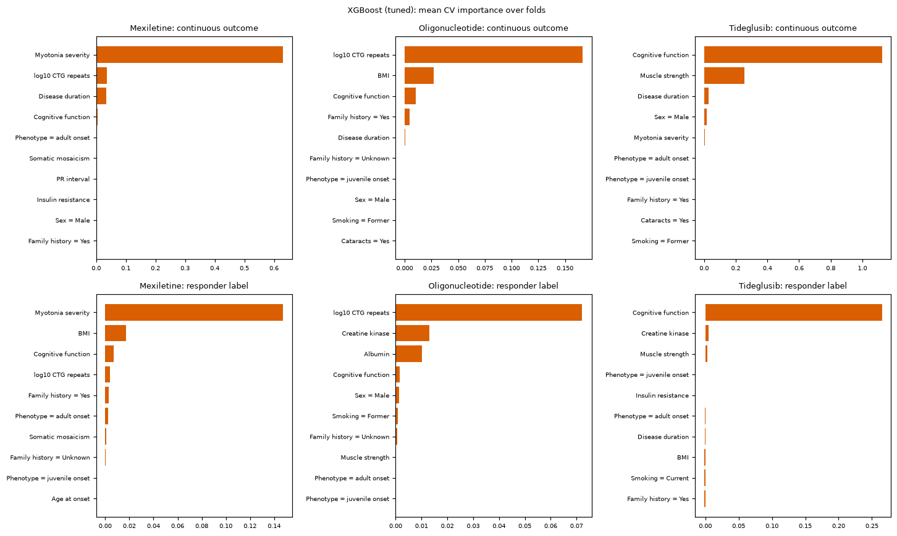
Top term per panel: Mexiletine continuous outcome: Myotonia severity (train verdict SIGNAL); Oligonucleotide continuous outcome: log10 CTG repeats (train verdict SIGNAL); Tideglusib continuous outcome: Cognitive function (train verdict SIGNAL); Mexiletine responder label: Myotonia severity (train verdict BORDERLINE); Oligonucleotide responder label: log10 CTG repeats (train verdict BORDERLINE); Tideglusib responder label: Cognitive function (train verdict SIGNAL).
Out-of-fold prediction: continuous outcome obs vs pred (top), responder-label ROC (bottom)
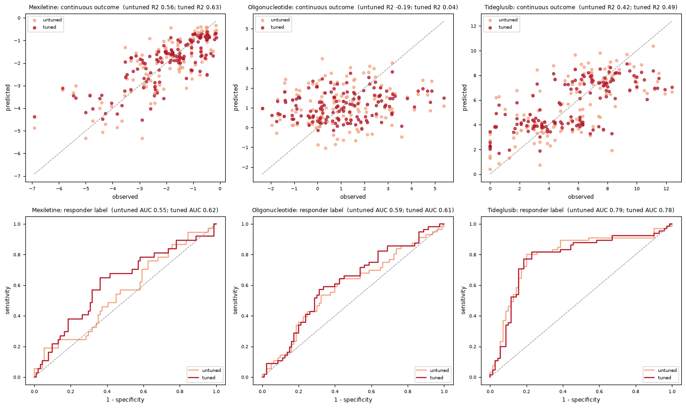
Untuned: one hidden layer of 16. Tuned grid (inner 3-fold): hidden {8,16,32} x alpha {1e-4,1e-2,1}. Watch out: Least transparent; small arms limit what it can learn.
add("MLP (16,)", _ttr(MLPRegressor(hidden_layer_sizes=(16,), max_iter=3000, random_state=S)), _p("regressor", {"hidden_layer_sizes": [(8,), (16,), (32,)], "alpha": [1e-4, 1e-2, 1.0]}))
add("MLP (16,)", MLPClassifier(hidden_layer_sizes=(16,), max_iter=3000, random_state=S), {"hidden_layer_sizes": [(8,), (16,), (32,)], "alpha": [1e-4, 1e-2, 1.0]})
out.append((f"{r['name']} (tuned, GridSearchCV)", (lambda r=r, cv=cv: GridSearchCV(mk(r), {f"est__{k}": v for k, v in r["grid"].items()}, scoring=r["scoring"], cv=cv, n_jobs=1)), True, r))CV result (train, repeated 5-fold x3; mean ± SD)
| Variant | Outcome | Mexiletine | Oligonucleotide | Tideglusib |
|---|---|---|---|---|
| untuned | continuous outcome (CV RMSE) | 0.885 ± 0.032 | 1.952 ± 0.092 | 3.000 ± 0.083 |
| untuned | responder label (CV AUC) | 0.541 ± 0.018 | 0.609 ± 0.008 | 0.699 ± 0.023 |
| tuned | continuous outcome (CV RMSE) | 0.843 ± 0.014 | 1.741 ± 0.090 | 2.585 ± 0.166 |
| tuned | responder label (CV AUC) | 0.571 ± 0.016 | 0.632 ± 0.013 | 0.732 ± 0.015 |
Characteristic figure
No natural diagram for this method; see the prediction grid below.
Out-of-fold prediction: continuous outcome obs vs pred (top), responder-label ROC (bottom)
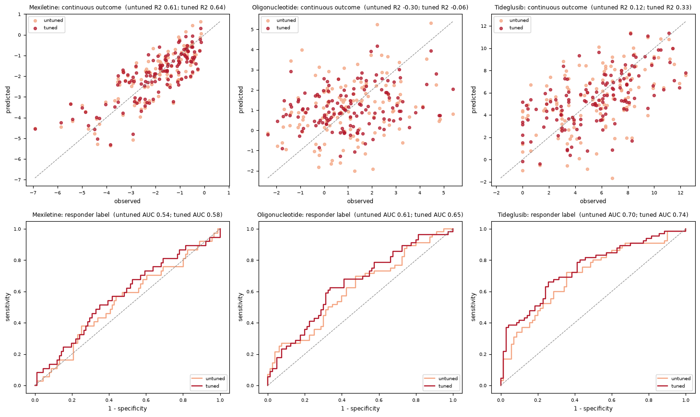
AI tool disclosure (kickoff checklist): Claude Code (Anthropic) was used to write the analysis code (R and Python), to generate these pages, and to draft the text; every number on these pages is read from results/*.csv produced by the scripts in pdf_pipeline/src. Data are simulated; results do not describe real patients or approved therapies.